Subframe
Subframe, B207To remove
1. Remove the upper bumper shell attachments.
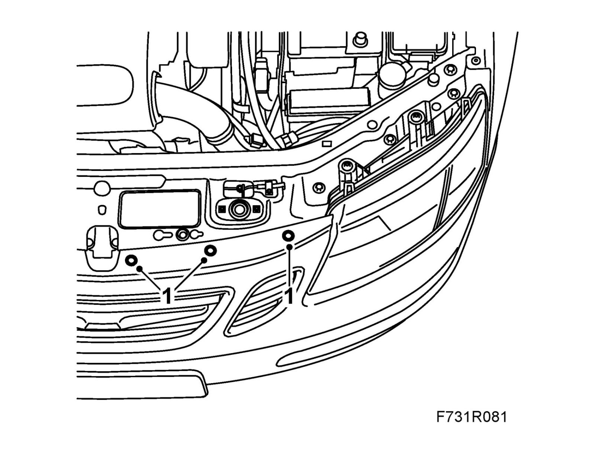
2. Hang two 83 95 212 Straps in place over the radiator member and the radiator unit so that they are accessible from below.
3. Raise the car.
4. Remove the front wheels.
5. Remove the lower front cover.
CV: Remove Chassis reinforcement, front subframe, CV.
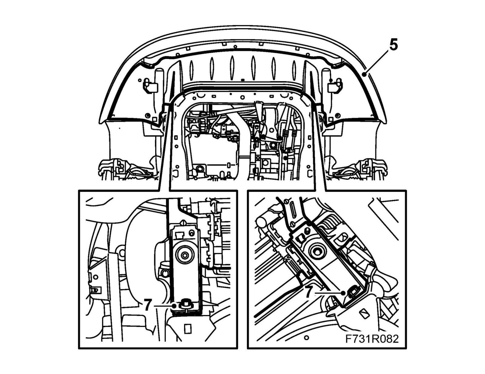
6. Bind the radiator unit tightly with the straps.
7. Remove the radiator brackets from the subframe.
8. Remove Exhaust system assembly.
Important
Take care so as not to crack the flex bellows.
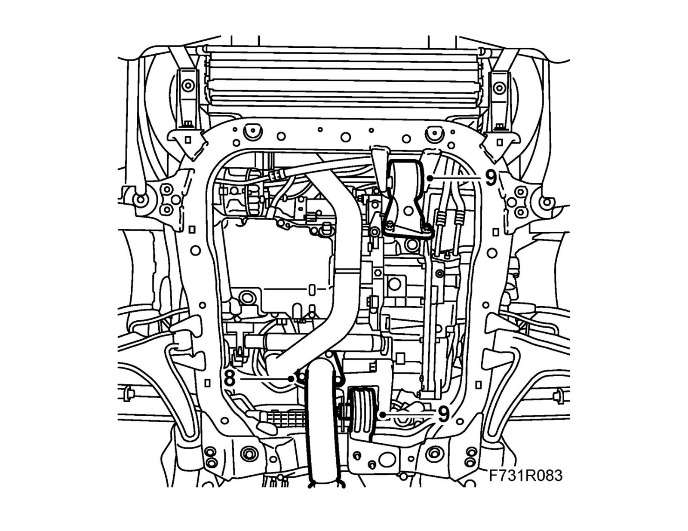
9. Remove the engine torque rod from the subframe.
10. Remove the bolt and nut which attach the suspension arm to the steering swivel member on both sides.
Left-hand suspension arm and cars with xenon lights:Remove the level sensor.
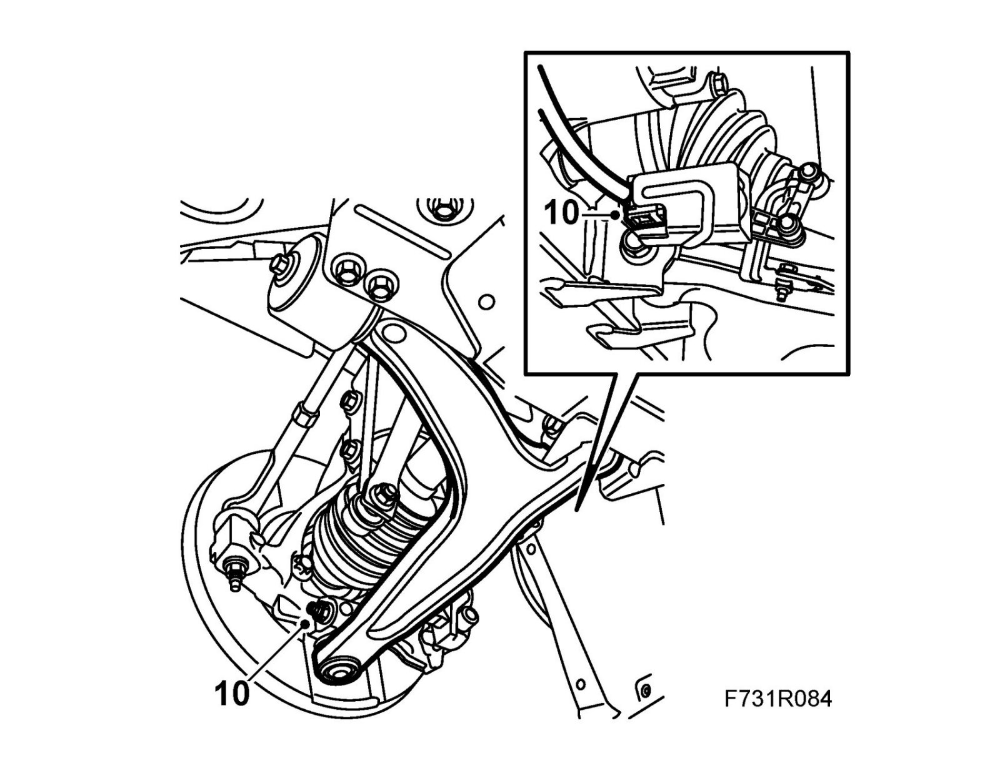
11. Remove the steering gear from the subframe. Mind the nuts and washers. Allow the steering gear to remain suspended.
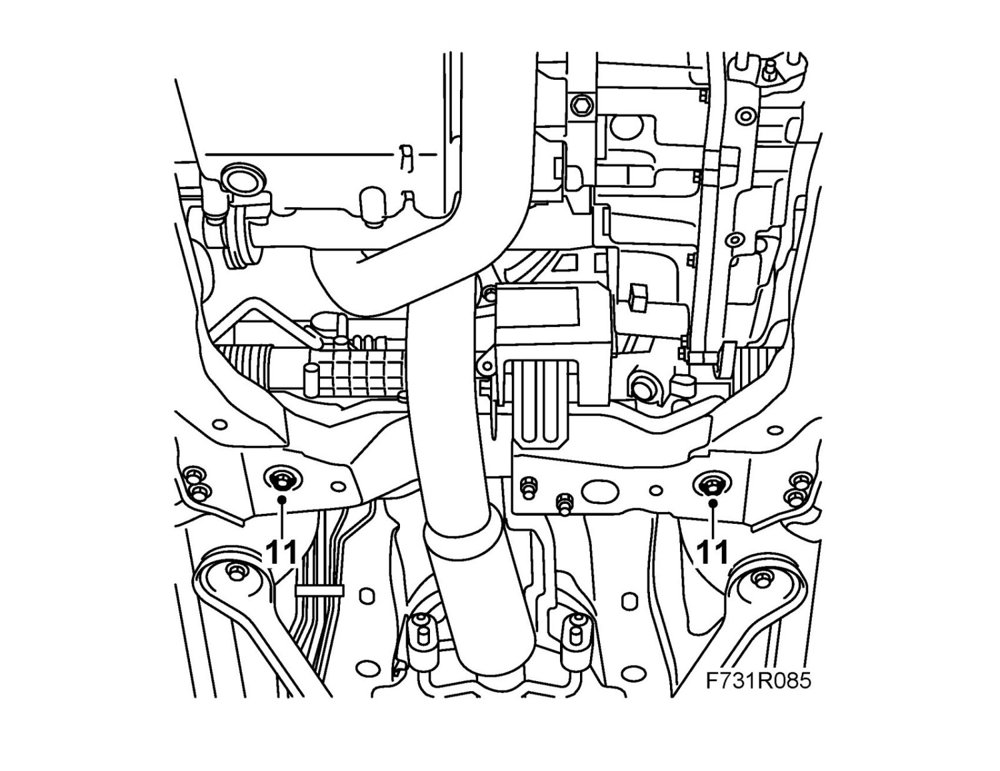
12. Open the clips that secure the power steering pipe to the subframe.
13. Remove the front part of the wing liner and fold away slightly.
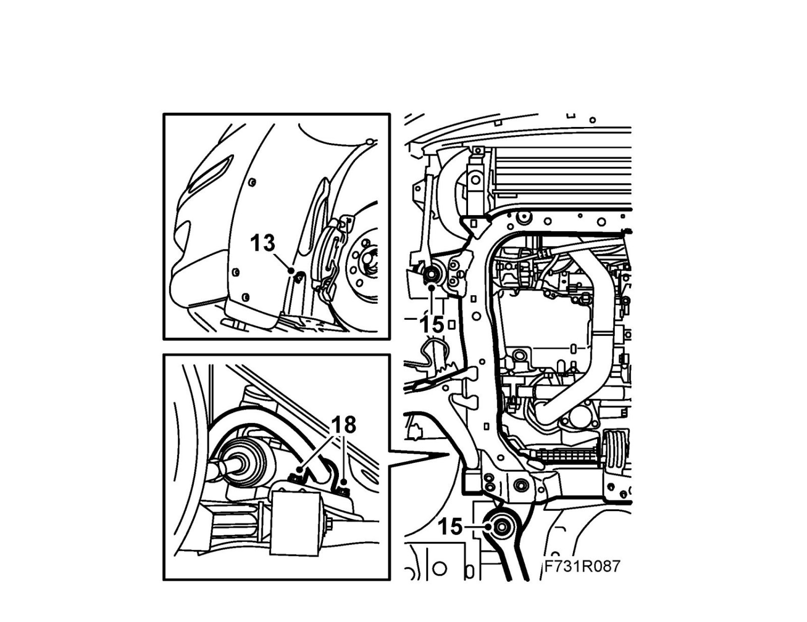
14. Position the 83 95 311 Trolley lift underneath with 83 94 801 Parent fixture and 83 96 137 Removal/fitting tool, subframe.
15. Remove the subframe bolts on both sides. Remove the stays from the body.
16. Lower the subframe slightly.
17. Pull out the suspension arms ball-and-socket joints from the steering swivel members.
18. Remove the anti-roll bar from the subframe.
19. Lower the subframe.
20. Subframe replacement: Remove the suspension arms and rear torque rod.
To fit
1. Place the frame on the 83 95 311 Trolley lift with 83 94 801 Parent fixture and 83 96 137 Removal/fitting tool, subframe.
2. Subframe replacement: Fit the rear torque rod and the suspension arms in the horizontal position.
Rear torque rod: 60 Nm (44 lbf ft)
Rear bush to subframe 65 Nm +135° (48 lbf ft +135°)
Front bush to subframe 65 Nm +135° (48 lbf ft +135°)
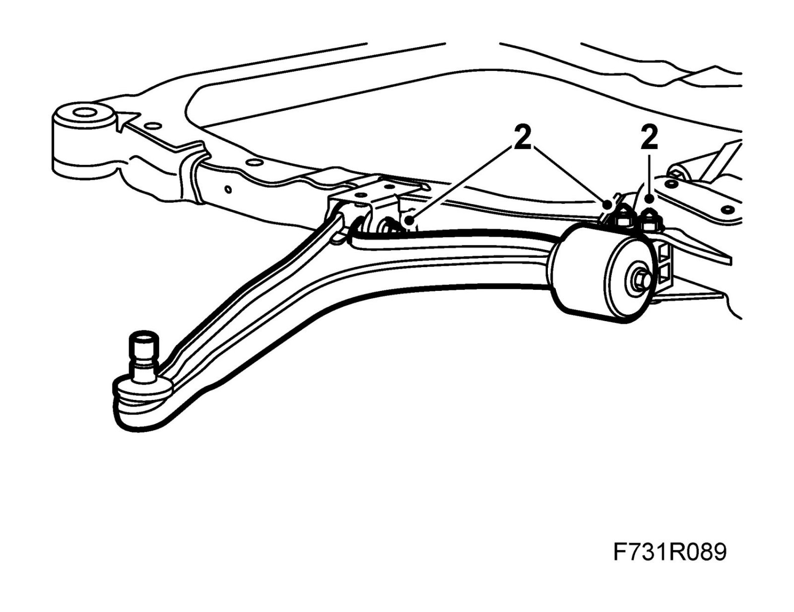
3. Lift the frame.
Fit the ball joints for the suspension arms in the steering swivel member.
Fit the anti-roll bar to the subframe. The opening of the rubber bushes should face forward (M05 only)
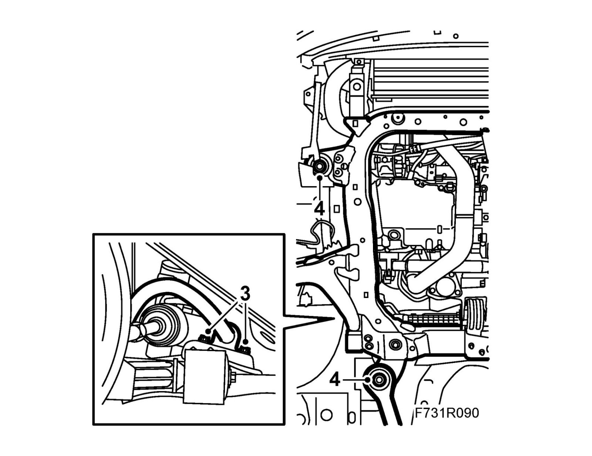
4. Lift the subframe into place and align 83 96 137 Centering tool, subframe - body with the locating holes in the body.
5. Attach the power steering pipe to the plastic clips on the subframe.
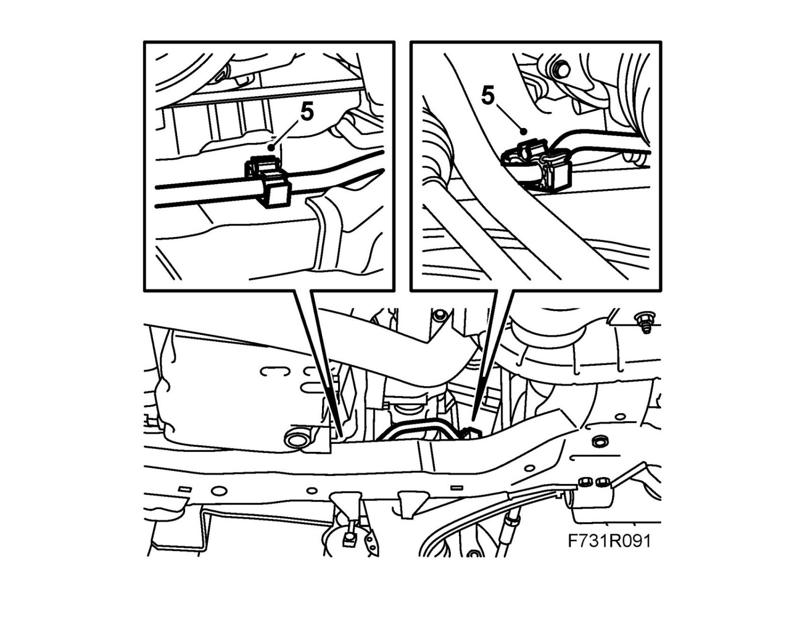
6. Lift the subframe so that the inner sections of the bushes are pressing against the body. Fit the front subframe bolts on both sides.
Tightening torque 75 Nm +135° (55 lbf ft +135°)
Fit the stays and the rear subframe bolts on both sides. Enter the rear stay bolts before tightening the subframe bolts.
Tightening torque 75 Nm +135° (55 lbf ft +135°)
Lower and pull away the trolley lift.
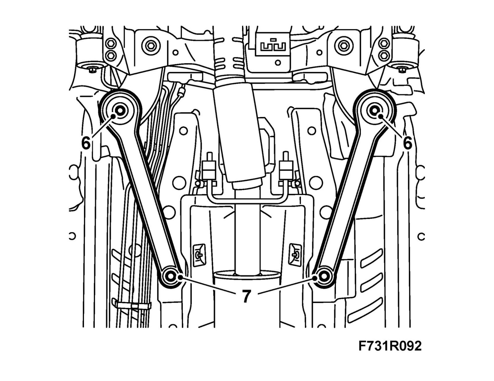
7. Tighten the rear stay bolts.
Tightening torque 90 Nm +45° (66 lbf ft +45°)
8. Fit the steering gear with bolts, washers and nuts.
Tightening torque 50 Nm +60° (37 lbf ft +60°)
9. Fit the engine torque rod to the subframe.
Tightening torque, rear torque rod 80 Nm (59 lbf ft)
Tightening torque, front torque rod 60 Nm +90° (44 lbf ft +90°)
Set up 83 96 145 Centering tool, subframe - engine and check that the engine is correctly positioned in relation to the subframe.
Remove the centering tool.
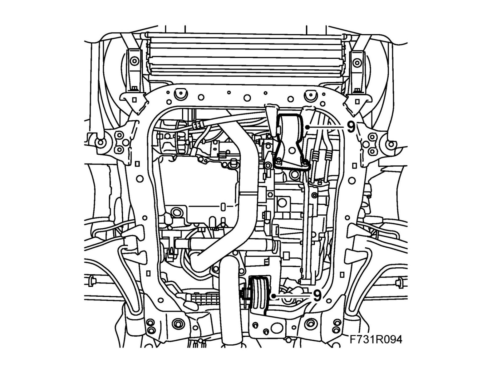
10. Fit the suspension arms to the steering swivel members.
Warning
Press up the pin carefully.
The groove in the pin must be visible in the screw hole in the spindle housing.
If the rubber gaiter is pressed down, it will not seal properly to the swivel pin.
Tightening torque 50 Nm (37 lbf ft)
Left-hand suspension arm and cars with xenon lights:Fit the level sensor.
11. Fit the radiator brackets to the subframe.
Note
Check that the upper radiator unit support is placed correctly.
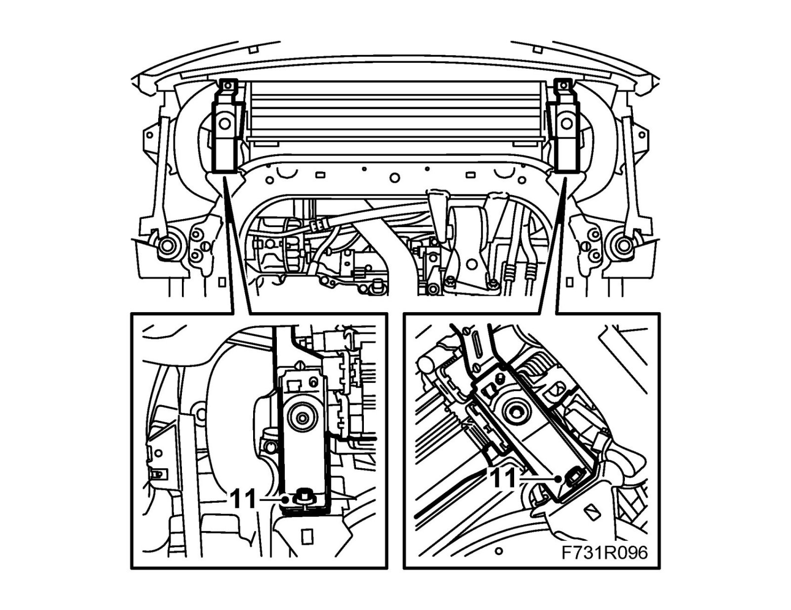
12. Remove the straps.
13. Fit Exhaust system assembly.
Important
Take care so as not to crack the flex bellows.
14. Fit the front part of the wing liner on both sides of the car.
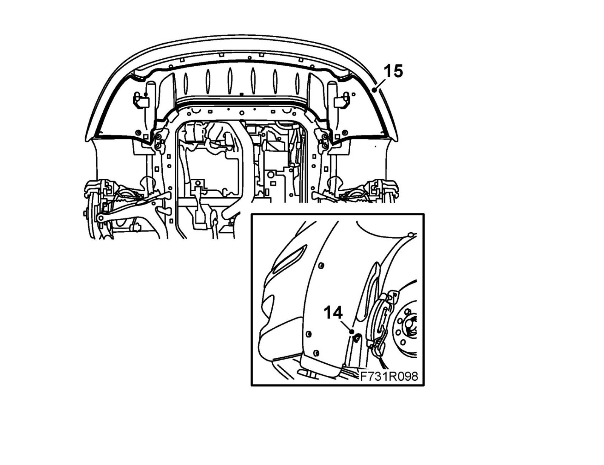
15. CV: Fit Chassis reinforcement, front subframe, CV.
Fit the lower front cover.
16. Fit the wheels.
17. Lower the car to the floor.
18. Fit the upper bumper shell attachments.
19. Check the straight-ahead position of the steering wheel when driving on a level road. Adjust if necessary.
20. Replacement of subframe: Carry out Four wheel alignment.